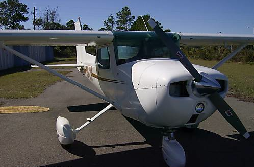
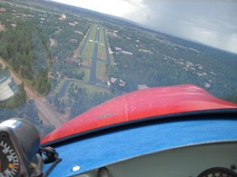
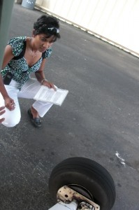
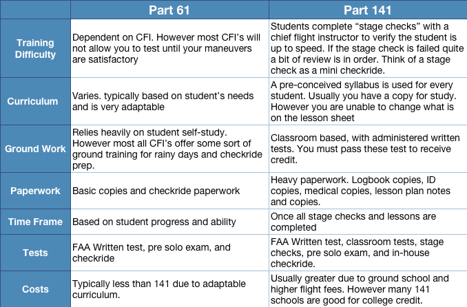
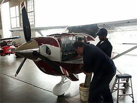
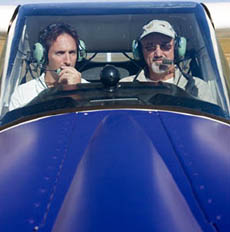
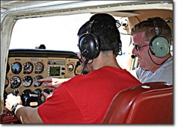

<?xml version="1.0" encoding="UTF-8"?><rss version="2.0"
	xmlns:content="http://purl.org/rss/1.0/modules/content/"
	xmlns:wfw="http://wellformedweb.org/CommentAPI/"
	xmlns:dc="http://purl.org/dc/elements/1.1/"
	xmlns:atom="http://www.w3.org/2005/Atom"
	xmlns:sy="http://purl.org/rss/1.0/modules/syndication/"
	xmlns:slash="http://purl.org/rss/1.0/modules/slash/"
	>

<channel>
	<title>Flight Training &#8211; MzeroA.com</title>
	<atom:link href="http://www.m0a.com/category/flight-training/feed/" rel="self" type="application/rss+xml" />
	<link>http://www.m0a.com</link>
	<description>Because A Good Pilot Is Always Learning</description>
	<lastBuildDate>Tue, 22 Dec 2015 20:46:20 +0000</lastBuildDate>
	<language>en-US</language>
	<sy:updatePeriod>hourly</sy:updatePeriod>
	<sy:updateFrequency>1</sy:updateFrequency>
	<generator>https://wordpress.org/?v=4.4</generator>
	<item>
		<title>How I Fly With An iPad</title>
		<link>http://www.m0a.com/how-i-fly-with-an-ipad/</link>
		<comments>http://www.m0a.com/how-i-fly-with-an-ipad/#respond</comments>
		<pubDate>Mon, 01 Dec 2014 21:04:25 +0000</pubDate>
		<dc:creator><![CDATA[Jason Schappert]]></dc:creator>
				<category><![CDATA[Flight Training]]></category>
		<category><![CDATA[Private Pilot]]></category>
		<category><![CDATA[Instrument Pilot]]></category>
		<category><![CDATA[Commercial Pilot]]></category>
		<category><![CDATA[CFI]]></category>
		<category><![CDATA[How I Fly With An iPad]]></category>

		<guid isPermaLink="false">http://www.m0a.com/?p=4261</guid>
		<description><![CDATA[With the release of our first trailer for the film &#8220;Flying Again&#8221; I&#8217;ve been asked all this week and last about how I add technology like an iPad into the cockpit. I put together a quick video showcasing how I use the iPad to flight plan and fly.]]></description>
				<content:encoded><![CDATA[<p>With the release of our first trailer for the film &#8220;<a href="https://www.kickstarter.com/projects/mzeroa/flying-again-a-pilots-journey-back-to-proficiency">Flying Again</a>&#8221; I&#8217;ve been asked all this week and last about how I add technology like an iPad into the cockpit.</p>
<p>I put together a quick video showcasing how I use the iPad to flight plan and fly.</p>
<p><center><br />
<iframe width="560" height="315" src="http://www.youtube.com/embed/W1AZ21p4RoU" frameborder="0" allowfullscreen></iframe><br />
</center><br />
<a href="https://www.kickstarter.com/projects/mzeroa/flying-again-a-pilots-journey-back-to-proficiency"></a></p>
]]></content:encoded>
			<wfw:commentRss>http://www.m0a.com/how-i-fly-with-an-ipad/feed/</wfw:commentRss>
		<slash:comments>0</slash:comments>
		</item>
		<item>
		<title>If I Could Do My Flight Training Over</title>
		<link>http://www.m0a.com/flight-training-over/</link>
		<comments>http://www.m0a.com/flight-training-over/#respond</comments>
		<pubDate>Mon, 07 Jul 2014 14:55:02 +0000</pubDate>
		<dc:creator><![CDATA[Jason Schappert]]></dc:creator>
				<category><![CDATA[Flight Training]]></category>

		<guid isPermaLink="false">http://www.m0a.com/?p=4223</guid>
		<description><![CDATA[Recording from the webinar I hosted titled &#8220;If I Could Do My Flight Training Over&#8221; *Webinar video starts off blurry for whatever reason then clears up. Audio is the most important part anyways though and it&#8217;s fine.* Links Mentioned In Webinar PrivatePilotBlueprint.com]]></description>
				<content:encoded><![CDATA[<p>Recording from the webinar I hosted titled &#8220;If I Could Do My Flight Training Over&#8221;</p>
<p><center><br />
<iframe width="560" height="315" src="http://www.youtube.com/embed/Jr_YL48Vr5Q" frameborder="0" allowfullscreen></iframe><br />
</center><br />
*Webinar video starts off blurry for whatever reason then clears up. Audio is the most important part anyways though and it&#8217;s fine.*</p>
<p><strong>Links Mentioned In Webinar</strong><br />
<a href="http://privatepilotblueprint.com">PrivatePilotBlueprint.com</a></p>
]]></content:encoded>
			<wfw:commentRss>http://www.m0a.com/flight-training-over/feed/</wfw:commentRss>
		<slash:comments>0</slash:comments>
		</item>
		<item>
		<title>What To Expect On Your Biennial Flight Review (BFR)</title>
		<link>http://www.m0a.com/biennial-flight-review-bfr/</link>
		<comments>http://www.m0a.com/biennial-flight-review-bfr/#respond</comments>
		<pubDate>Tue, 13 May 2014 12:47:27 +0000</pubDate>
		<dc:creator><![CDATA[Jason Schappert]]></dc:creator>
				<category><![CDATA[Flight Training]]></category>
		<category><![CDATA[Biennial Flight Review]]></category>
		<category><![CDATA[BFR]]></category>

		<guid isPermaLink="false">http://www.m0a.com/?p=4210</guid>
		<description><![CDATA[Has it been 24 calendar months already? I find I&#8217;m often asked by pilots &#8220;What should I expect on my BFR?&#8221; Is it pass/fail? Is it as intense as a checkride? Can they take my certificate? I&#8217;ll answer all of those questions in todays video. In that video I&#8217;m doing things a bit different. I&#8217;m [&#8230;]]]></description>
				<content:encoded><![CDATA[<p>Has it been 24 calendar months already? I find I&#8217;m often asked by pilots &#8220;What should I expect on my BFR?&#8221; Is it pass/fail? Is it as intense as a checkride? Can they take my certificate? I&#8217;ll answer all of those questions in todays video.</p>
<p>In that video I&#8217;m doing things a bit different. I&#8217;m taking you along for the ride as I do a BFR for my friend and Pilot&#8217;s Inner Circle Member Steve in his Cherokee 140. It&#8217;s a great chance to see how I teach and conduct a flight review and give you a pretty good idea on what to expect.</p>
<p>In the video I also share a neat deal where you can complete the ground portion of your flight review with me online! The all you have to do is the fun part&#8230; Fly. But I&#8217;ll share more about that inside the video. &#8211; Enjoy, Jason.</p>
<p><center><br />
<iframe width="560" height="315" src="http://www.youtube.com/embed/gahXP5yOTUY" frameborder="0" allowfullscreen></iframe><br />
</center></p>
<p><center></p>
<h2>Want To Do Your BFR Prep and Ground Work With Me? <a href="http://m0a.com/bfr">CLICK HERE</a> To Learn More and See How We Can Begin Working Together.</h2>
<p></center></p>
]]></content:encoded>
			<wfw:commentRss>http://www.m0a.com/biennial-flight-review-bfr/feed/</wfw:commentRss>
		<slash:comments>0</slash:comments>
		</item>
		<item>
		<title>3 Secrets To The Private Pilot Checkride</title>
		<link>http://www.m0a.com/3-secrets-to-the-private-pilot-checkride/</link>
		<comments>http://www.m0a.com/3-secrets-to-the-private-pilot-checkride/#respond</comments>
		<pubDate>Mon, 16 Sep 2013 12:44:03 +0000</pubDate>
		<dc:creator><![CDATA[Jason Schappert]]></dc:creator>
				<category><![CDATA[Flight Training]]></category>
		<category><![CDATA[Private Pilot Checkride]]></category>

		<guid isPermaLink="false">http://www.m0a.com/?p=4098</guid>
		<description><![CDATA[Being the guy who wrote the book on passing your checkride I get asked a lot of questions regarding checkride prep. In todays quick video I&#8217;ve boiled it down to 3 REALLY SIMPLE secrets/tips that can help anyone prepping for their private pilot checkride. They may seem simple at first but knowing them and applying [&#8230;]]]></description>
				<content:encoded><![CDATA[<p>Being the guy who wrote <a href="http://m0a.com/store/e-books/private-pilot-checkride-ebook/">the book</a> on passing your checkride I get asked a lot of questions regarding checkride prep. In todays quick video I&#8217;ve boiled it down to 3 REALLY SIMPLE secrets/tips that can help anyone prepping for their private pilot checkride. They may seem simple at first but knowing them and applying them to your checkride day mindset and approach is going to help you immensely. Check out the video below and best of luck on your private pilot checkride! &#8211; Jason</p>
<p><center><br />
<iframe width="480" height="360" src="http://www.youtube.com/embed/4GobmK41r2U" frameborder="0" allowfullscreen></iframe><br />
</center> </p>
<p>Listen if you&#8217;re nervous or don&#8217;t know what to expect on your checkride don&#8217;t worry! It&#8217;s totally normal! In fact we&#8217;re doing a 3 day &#8220;Checkride Intensive&#8221; webinar series. We&#8217;re going to interview an actual checkride examiner. You&#8217;ll be able to ask him questions and hear in his own words what ALL FAA designated pilot examiners want to see and hear. The following days we&#8217;re going to conduct mock checkrides all via webinar. I&#8217;ll ask actual FAA checkride questions and you&#8217;ll be able to respond with your best answer. From there we&#8217;ll work to formulate your answer for the test. The best part is after participating in the webinar series you can enjoy our &#8220;Pass Your Checkride or We&#8217;ll Pay For It!&#8221; Guarantee. We&#8217;re so confident that you&#8217;ll pass your checkride that if you don&#8217;t pass it we&#8217;ll pay for it!</p>
<p>Click the link below to learn more about the webinar series<br />
<center></p>
<h2>
<a href="../../../pmcyt/index.html">PassMyCheckride.net</a><br />
</h2>
<p></center></p>
]]></content:encoded>
			<wfw:commentRss>http://www.m0a.com/3-secrets-to-the-private-pilot-checkride/feed/</wfw:commentRss>
		<slash:comments>0</slash:comments>
		</item>
		<item>
		<title>Avoiding Runway Incursions</title>
		<link>http://www.m0a.com/avoiding-runway-incursions/</link>
		<comments>http://www.m0a.com/avoiding-runway-incursions/#respond</comments>
		<pubDate>Thu, 05 Sep 2013 10:31:34 +0000</pubDate>
		<dc:creator><![CDATA[Jason Schappert]]></dc:creator>
				<category><![CDATA[Flight Training]]></category>
		<category><![CDATA[Runway Incursions]]></category>

		<guid isPermaLink="false">http://www.m0a.com/?p=4089</guid>
		<description><![CDATA[Just in case you weren&#8217;t aware of the new PTS Changes Runway incursions have been a huge focus point and special emphasis area for checkride examiners. According to the FAA and the Aviation Safety Reporting System which is run by NASA. Runway incursions are pushing an all time high. It&#8217;s important to realize that runway [&#8230;]]]></description>
				<content:encoded><![CDATA[<p>Just in case you weren&#8217;t aware of the new <a href="../../../pts-change/index.html">PTS Changes</a> Runway incursions have been a huge focus point and special emphasis area for checkride examiners. According to the FAA and the <a href="http://asrs.arc.nasa.gov/docs/rpsts/rwy_incur.pdf">Aviation Safety Reporting System </a> which is run by NASA. Runway incursions are pushing an all time high.</p>
<p>It&#8217;s important to realize that runway incursions can be more than just aircraft. It could be something silly like the tractor mowing the airport and causing an airplane to go around. Even something that simple is considered and reported as a runway incursion&#8230; How many runway incursions do you believe go unreported each day???</p>
<p>Below is an example of a runway incursion taken to the extreme. Remember that all accidents are a chain of events and poor decisions. See if you can follow along with the chain of a potential accident in the video below:</p>
<p><center><br />
<iframe width="480" height="360" src="http://www.youtube.com/embed/HgSx4_4QTJw?rel=0" frameborder="0" allowfullscreen></iframe><br />
</center></p>
<p><strong>The Chain of An Accident &#038; Whether It Was In or Beyond The Pilot&#8217;s Control</strong></p>
<p>1. The Field Was IFR (beyond pilots control)<br />
2. Confused, United 1448 Makes A Wrong Turn While Taxiing (pilot error)<br />
3. Further Confusion For United 1448&#8230;Typically in airline operations you have &#8220;the flying pilot&#8221; and &#8220;the talking pilot&#8221; If you notice the female pilot made the first radio calls then as soon as they began to &#8220;feel lost&#8221; the male pilot jumps on the mic in an attempt to solve their problem. (Crew Resource Management Struggles certainly pilot and crew error)<br />
4. Both the Pilot and the tower think they are somewhere else on the airport (crew and controller error)<br />
5. The pilot and co pilot continue to fight for radio time stepping on each other (poor CRM)<br />
6. The controller is convinced that the pilot is wrong and clears another airplane for takeoff (controller error)<br />
7. Us Air pilot saves the day and breaks the chain of a potential accident by standing up and saying no</p>
<p>Think about it&#8230; That US Air pilot gets paid to fly and paid to be on time. It takes a lot of guts to sometimes stand up and just say no!</p>
<p>What are your thoughts? Leave me a comment below.</p>
]]></content:encoded>
			<wfw:commentRss>http://www.m0a.com/avoiding-runway-incursions/feed/</wfw:commentRss>
		<slash:comments>0</slash:comments>
		</item>
		<item>
		<title>If I Did My Flight Training Over</title>
		<link>http://www.m0a.com/if-i-did-my-flight-training-over/</link>
		<comments>http://www.m0a.com/if-i-did-my-flight-training-over/#comments</comments>
		<pubDate>Mon, 16 Jul 2012 14:10:30 +0000</pubDate>
		<dc:creator><![CDATA[Jason Schappert]]></dc:creator>
				<category><![CDATA[Flight Training]]></category>

		<guid isPermaLink="false">http://www.m0a.com/?p=3868</guid>
		<description><![CDATA[Hindsight is truly 20/20. What would you have done different in your flight training? Even if you&#8217;re just a few lessons into your flight training I&#8217;m sure you still have areas you wish you could/would have done different. So what would you have done different? Let me know in the comment box below!]]></description>
				<content:encoded><![CDATA[<p>Hindsight is truly 20/20. What would you have done different in your flight training? Even if you&#8217;re just a few lessons into your flight training I&#8217;m sure you still have areas you wish you could/would have done different.</p>
<p><center><br />
<object width="560" height="315"><param name="movie" value="http://www.youtube.com/v/wuGEBNzimo8?version=3&amp;hl=en_US"></param><param name="allowFullScreen" value="true"></param><param name="allowscriptaccess" value="always"></param><embed src="http://www.youtube.com/v/wuGEBNzimo8?version=3&hl=en_US" type="application/x-shockwave-flash" width="560" height="315" allowscriptaccess="always" allowfullscreen="true"></embed></object><br />
</center></p>
<h2>So what would you have done different? Let me know in the comment box below!</h2>
]]></content:encoded>
			<wfw:commentRss>http://www.m0a.com/if-i-did-my-flight-training-over/feed/</wfw:commentRss>
		<slash:comments>121</slash:comments>
		</item>
		<item>
		<title>Live Checkride Webinar</title>
		<link>http://www.m0a.com/live-checkride-webinar/</link>
		<comments>http://www.m0a.com/live-checkride-webinar/#comments</comments>
		<pubDate>Mon, 25 Jun 2012 17:11:21 +0000</pubDate>
		<dc:creator><![CDATA[Jason Schappert]]></dc:creator>
				<category><![CDATA[Flight Training]]></category>
		<category><![CDATA[Private Pilot Checkride]]></category>

		<guid isPermaLink="false">http://www.m0a.com/?p=3841</guid>
		<description><![CDATA[UPDATE: A lot of you have been asking about a recording&#8230; The Webinar WILL BE RECORDED and I&#8217;ll email you a link the next day so you can watch it or download it to your computer to keep forever. ANOTHER UPDATE: After paying the seat fee you&#8217;ll be directed to the signup page where you [&#8230;]]]></description>
				<content:encoded><![CDATA[<p><center><br />
<object width="560" height="315"><param name="movie" value="http://www.youtube.com/v/hnljhkUVl5A?version=3&amp;hl=en_US"></param><param name="allowFullScreen" value="true"></param><param name="allowscriptaccess" value="always"></param><embed src="http://www.youtube.com/v/hnljhkUVl5A?version=3&hl=en_US" type="application/x-shockwave-flash" width="560" height="315" allowscriptaccess="always" allowfullscreen="true"></embed></object></p>
<p>UPDATE: A lot of you have been asking about a recording&#8230; The Webinar WILL BE RECORDED and I&#8217;ll email you a link the next day so you can watch it or download it to your computer to keep forever.</p>
<p>ANOTHER UPDATE: After paying the seat fee you&#8217;ll be directed to the signup page where you can input all your info. If maybe you closed out your window too fast you might miss it. If so just send us an email at sales (at) m0a.com<br />
</center></p>
<p><center></p>
<form action="https://www.paypal.com/cgi-bin/webscr" method="post">
<input type="hidden" name="cmd" value="_s-xclick"><br />
<input type="hidden" name="hosted_button_id" value="9H33Y6BMYHQSN"><br />
<input type="image" src="https://www.paypalobjects.com/en_US/i/btn/btn_buynowCC_LG.gif" border="0" name="submit" alt="PayPal - The safer, easier way to pay online!"><br />
<br />
</form>
<p></center></p>
]]></content:encoded>
			<wfw:commentRss>http://www.m0a.com/live-checkride-webinar/feed/</wfw:commentRss>
		<slash:comments>20</slash:comments>
		</item>
		<item>
		<title>Pass Your Private Pilot Checkride</title>
		<link>http://www.m0a.com/pass-your-private-pilot-checkride/</link>
		<comments>http://www.m0a.com/pass-your-private-pilot-checkride/#comments</comments>
		<pubDate>Fri, 05 Mar 2010 15:36:14 +0000</pubDate>
		<dc:creator><![CDATA[Jason Schappert]]></dc:creator>
				<category><![CDATA[Flight Training]]></category>

		<guid isPermaLink="false">http://www.m0a.com/?p=2241</guid>
		<description><![CDATA[Pass Your Private Pilot Checkride with ease! Using Jason&#8217;s newest book now available in E-book, Audio Book and Paperback. View screen shots and watch the video below! Screen Shots from the Book Buy Your Copy Here Want to learn more? Ready to make a purchase? Check it out in the MzeroA Pilot Shop]]></description>
				<content:encoded><![CDATA[<p>Pass Your <a href="http://m0a.com/store/e-books/private-pilot-checkride-ebook/">Private Pilot Checkride</a> with ease! Using Jason&#8217;s newest book now available in E-book, Audio Book and Paperback.</p>
<p>View screen shots and watch the video below!</p>
<p><center><object width="480" height="295"><param name="movie" value="http://www.youtube.com/v/yq2bA7TEwsk&hl=en_US&fs=1&"></param><param name="allowFullScreen" value="true"></param><param name="allowscriptaccess" value="always"></param><embed src="http://www.youtube.com/v/yq2bA7TEwsk&hl=en_US&fs=1&" type="application/x-shockwave-flash" allowscriptaccess="always" allowfullscreen="true" width="480" height="295"></embed></object></center><br />
<center><br />
<h2>Screen Shots from the Book</h2>
<p></center></p>
<p><a href="../../../wordpress/wp-content/uploads/2010/03/Pass-your-Private-Pilot-Checkride-Screen-Shot.jpg"></a></p>
<p><a href="../../../wordpress/wp-content/uploads/2010/03/Pass-your-Private-Pilot-Checkride-screen-shot-2.jpg"></a><br />
<br /></br><br />
<br /></br><br />
<br /></br><br />
<br /></br><br />
<br /></br><br />
<br /></br><br />
<center><a href="http://m0a.com/store/e-books/private-pilot-checkride-ebook/"><strong>Buy Your Copy Here</strong></a></center><br />
<a href="../../../wordpress/wp-content/uploads/2010/03/Pass-your-Private-Pilot-Checkride-screenshot-3.jpg"></a></p>
<p><a href="../../../wordpress/wp-content/uploads/2010/03/Pass-your-Private-Pilot-Checkride-screenshot4.jpg"></a></p>
<p>Want to learn more? Ready to make a purchase? Check it out in the <a href="http://m0a.com/store/e-books/private-pilot-checkride-ebook/">MzeroA Pilot Shop</a></p>
]]></content:encoded>
			<wfw:commentRss>http://www.m0a.com/pass-your-private-pilot-checkride/feed/</wfw:commentRss>
		<slash:comments>2</slash:comments>
		</item>
		<item>
		<title>Learn to Fly &#8211; What Does it Cost?</title>
		<link>http://www.m0a.com/learn-fly-cost/</link>
		<comments>http://www.m0a.com/learn-fly-cost/#respond</comments>
		<pubDate>Mon, 15 Feb 2010 22:44:26 +0000</pubDate>
		<dc:creator><![CDATA[Jason Schappert]]></dc:creator>
				<category><![CDATA[Flight Training]]></category>

		<guid isPermaLink="false">http://www.m0a.com/?p=2134</guid>
		<description><![CDATA[So what does it cost if wanted to learn to fly? Flight schools will tell you whatever it takes to get you in the door. Many can misguide you with low ball and unrealistic figures. You have to understand there is more involved in learning to fly than just simply doing it. The Airplane Expenses [&#8230;]]]></description>
				<content:encoded><![CDATA[<p>So what does it cost if wanted to learn to fly?<br />
<a href="../../../choosing-flight-school/index.html">Flight schools</a> will tell you whatever it takes to get you in the door. Many can misguide you with low ball and unrealistic figures. You have to understand there is more involved in learning to fly than just simply doing it.</p>
<h2>The Airplane Expenses</h2>
<p>You can save a majority of your money here in the airplane category. Do you need to fly the newer, cooler, and more up to date aircraft or are you fine with an older airplane? This can save you hundreds and even thousands of dollars in your flight training. This is the main point I push in my flight school. My airplanes are maintained the same if not better than the newer ones and costs almost one hundred dollars an hour less! Shop around you may be surprised what kind of deals you find.</p>
<h2>The Ground Expenses</h2>
<p>Yes, flying even costs money just sitting on the ground. Yet this can be the area where you save the most money over time. How is that? Do more of it! The more you learn on the ground the more time you save in the air and that translates to big savings. Expect to spend 10 or more hours doing ground work with an instructor. This doesn&#8217;t include time you spend studying by yourself.<br />
<span id="more-2134"></span></p>
<h2>The Material Expenses</h2>
<p>Many flight schools overlook this expense and fail to really mention it when they&#8217;re quoting prices. This can really depend on how in depth you get with training. But below i&#8217;ve listed some key essentials you cannot do without.</p>
<p><a href="http://www.amazon.com/gp/product/B0019LQVTI?ie=UTF8&tag=m0a01-20&linkCode=as2&camp=1789&creative=390957&creativeASIN=B0019LQVTI">E6B Flight Computer</a></p>
<p><a href="http://www.amazon.com/gp/product/0884872386?ie=UTF8&tag=m0a01-20&linkCode=as2&camp=1789&creative=390957&creativeASIN=0884872386">A Private Pilot Manual or Textbook</a></p>
<p><a href="http://www.amazon.com/gp/product/1560277440?ie=UTF8&tag=m0a01-20&linkCode=as2&camp=1789&creative=390957&creativeASIN=1560277440">A FAR/AIM</a></p>
<p><a href="http://www.amazon.com/gp/product/B001MX0A86?ie=UTF8&tag=m0a01-20&linkCode=as2&camp=1789&creative=390957&creativeASIN=B001MX0A86">A Headset</a></p>
<p>Keep in mind these are just a few things on a list of many that you will eventually need.</p>
<h2>Conclusion</h2>
<p>Don&#8217;t fall into the <a href="../../../choosing-flight-school/index.html">flight school</a> marketing traps. Yes, the FAA only requires a minimum of 40 hours but let me be the first to tell you that it won&#8217;t happen. This is the biggest thing the schools do to make their prices look low. They quote you based on 40 hours when the national average is in the low 60&#8217;s hour wise!</p>
<p>The average cost of a private pilot certificate is around 5,000 &#8211; 6,000 dollars if you&#8217;re a good shopper. Don&#8217;t fall for marketing puffery, shop around and ask the right questions.</p>
<p>Here&#8217;s a list of a few more article by me that may interest you on this subject:<br />
<a href="../../../learn-to-fly/index.html">Learn to Fly &#8211; What does it Take?</a><br />
<a href="../../../3-ways-flight-training-track/index.html">3 Ways to Know Your Flight Training is On Track</a><br />
<a href="../../../10-student-pilot/index.html">10 Things I Wish I Had Known When I Was a Student Pilot</a><br />
<a href="../../../5-common-student-pilot-errors/index.html">5 Common Student Pilot Errors</a><br />
<a href="../../../10-things-every-pilot-should-own/index.html">10 Things Every Pilot Should Own</a><br />
<a href="../../../flightbag/index.html">5 Things That Never Leave My Flightbag</a></p>
]]></content:encoded>
			<wfw:commentRss>http://www.m0a.com/learn-fly-cost/feed/</wfw:commentRss>
		<slash:comments>0</slash:comments>
		</item>
		<item>
		<title>3 Ways to Make Your Checkride Easier</title>
		<link>http://www.m0a.com/3-ways-checkride-easier/</link>
		<comments>http://www.m0a.com/3-ways-checkride-easier/#respond</comments>
		<pubDate>Wed, 27 Jan 2010 22:07:25 +0000</pubDate>
		<dc:creator><![CDATA[Jason Schappert]]></dc:creator>
				<category><![CDATA[Flight Training]]></category>

		<guid isPermaLink="false">http://www.m0a.com/?p=1806</guid>
		<description><![CDATA[Checkrides wreck nerves. It&#8217;s a given. Students feel anxious, as if there is a lot on the line. All your training has amounted to this one flight. How can we make it easier? Be Current No examiner is going to accept anything being out of date. Check your charts are they still valid? What about [&#8230;]]]></description>
				<content:encoded><![CDATA[<p><a href="../../../wordpress/wp-content/uploads/2009/04/yellow-cub-m0a.jpg"></a>Checkrides wreck nerves. It&#8217;s a given. Students feel anxious, as if there is a lot on the line. All your training has amounted to this one flight. How can we make it easier?</p>
<h2>Be Current</h2>
<p>No examiner is going to accept anything being out of date. Check your charts are they still valid? What about your FAR/AIM? AFD? Be sure everything you have is up to date and current. I bet it&#8217;s one of the first things your examiner will ask.</p>
<h2>Be Prepared</h2>
<p>Be sure everything is ready. Especially your flight plan! Have your calculations made for the days current weather conditions. This may mean waking up earlier. Find out how much your examiner weighs and calculate a weight and balance. Think of everything! If you don&#8217;t you may get surprised.</p>
<h2>Be Professional</h2>
<p>Students always ask: &#8220;How should I dress for my checkride?&#8221; My response: &#8220;Dress like you would for a job interview.&#8221; Ok so maybe not a full tux, however for each checkride i&#8217;ve done I at least wear a dress shirt or polo tucked in.</p>
<p>How does your dress effect your checkride? Being a pilot is a serious matter. You should portray it in how you act and dress. Think if you were the examiner. Would you want to test someone in ripped jeans and flip flops?</p>
<p>You prepared for months and put hours of hard work into this. Stay focused and fly your best!</p>
]]></content:encoded>
			<wfw:commentRss>http://www.m0a.com/3-ways-checkride-easier/feed/</wfw:commentRss>
		<slash:comments>0</slash:comments>
		</item>
		<item>
		<title>The Effects of Density Altitude</title>
		<link>http://www.m0a.com/effects-density-altitude/</link>
		<comments>http://www.m0a.com/effects-density-altitude/#comments</comments>
		<pubDate>Wed, 20 Jan 2010 23:00:30 +0000</pubDate>
		<dc:creator><![CDATA[Jason Schappert]]></dc:creator>
				<category><![CDATA[Flight Training]]></category>

		<guid isPermaLink="false">http://www.m0a.com/?p=1768</guid>
		<description><![CDATA[Ever wonder why our airplane performs better some days more than others? It all comes down to density altitude. Density Altitude is best defined as: Pressure altitude corrected for non-standard temperature variations. Air density is the single most important factor affecting aircraft performance. So what does this mean exactly? It’s how high the aircraft feels [&#8230;]]]></description>
				<content:encoded><![CDATA[<p>Ever wonder why our airplane performs better some days more than others? It all comes down to density altitude. Density Altitude is best defined as: Pressure altitude corrected for non-standard temperature variations. Air density is the single most important factor affecting aircraft performance.</p>
<p>So what does this mean exactly? It’s how high the aircraft feels like it is. We can both agree that my little Cessna 150 will perform better at sea level than it will at 10,000 feet! (If you can even get it up there) This is what density altitude is. Your airplane sitting on the ramp will “feel” like or perform like it’s at a certain altitude depending on density altitude.</p>
<p><Center><iframe width="560" height="315" src="http://www.youtube.com/embed/K9ruP2jSLU4" frameborder="0" allowfullscreen></iframe><Center></p>
<h3>Example</h3>
<p>Typical density altitude in the Summer here in Florida is 2,000-3,000 feet. So my airplane rolling down the runway will perform like it’s at 3,000 feet because of the air density.</p>
<h2>What Factors Effect Air Density?</h2>
<h3>Humidity</h3>
<p>Humidity increases density altitude. Why? Because it decreases the density of the air! Confusing huh?</p>
<p>Think of it like this. If there is a high humidity that water in the air has to take the place of something. So the water vapor takes the place of the air molecules thus making the air “less dense” So if there is less air molecules for our propeller to bite and to flow over our wing we’ll have a decrease in performance.<br />
<span id="more-1768"></span></p>
<h3>Temperature</h3>
<p>Remember the warmer the air gets the less dense it is. This is why our airplane always performs better in the winter months. So warm air also decreases performance because it increases density altitude.</p>
<h3>Altitude</h3>
<p>This one should be a given. We know that at a higher altitude the air is less dense. Which means a decrease in performance. </p>
<h2>Calculating Density Altitude</h2>
<p>As long as you know the pressure altitude. This can be done on your e6b. However I’ve always used this formula.</p>
<p>Density Altitude = (OAT &#8211; Standard Temp) x 120 + Pressure Altitude</p>
<p><em>Note: OAT = Outside Air Temperature</em></p>
<p>For example:</p>
<p>PA = 600<br />
OAT = 19<br />
Standard Temp = 15</p>
<p>(19-15) x 120 + 600  = 1,080ft</p>
<p>So your airplane will feel like it’s at 1,080 feet just sitting on the ground.</p>
]]></content:encoded>
			<wfw:commentRss>http://www.m0a.com/effects-density-altitude/feed/</wfw:commentRss>
		<slash:comments>4</slash:comments>
		</item>
		<item>
		<title>Recovering from Spins</title>
		<link>http://www.m0a.com/spin-recovery/</link>
		<comments>http://www.m0a.com/spin-recovery/#comments</comments>
		<pubDate>Wed, 13 Jan 2010 23:00:27 +0000</pubDate>
		<dc:creator><![CDATA[Jason Schappert]]></dc:creator>
				<category><![CDATA[Flight Training]]></category>

		<guid isPermaLink="false">http://www.m0a.com/?p=1758</guid>
		<description><![CDATA[Before I put a student up for solo I always make him or her recover from at least 1 spin. Some instructors call me crazy for this but I find it helps students better overcome their fears. Many students have this predetermined idea that spins are the “end all” for pilots. That statement is very [&#8230;]]]></description>
				<content:encoded><![CDATA[<p>Before I put a student up for solo I always make him or her recover from at least 1 spin. Some instructors call me crazy for this but I find it helps students better overcome their fears. Many students have this predetermined idea that spins are the “end all” for pilots. That statement is very far from the truth. Let me explain.</p>
<p>A few years ago I was helping a student get ready for his checkride. In fact his checkride was the next day! So for our last flight before the big test I decided to play “examiner” and really be tough on him.</p>
<p>He was doing so well until it came time to practice stalls. We climbed to 5,500 feet, made our clearing turns, conducted our pre-maneuver checklist and were ready to go. I asked him to do a power on turning stall to the right.</p>
<p>“I can’t do that!” he said. “We’ll spin for sure!” At this point in my flight instruction career I had never really taught spins like I do now. We would just talk about them on the ground which I found out to be a big mistake.</p>
<p>We entered the maneuver and he added a 15 degree bank to the right. The stall warning horn came on in full ear piercing force as our airspeed dropped to levels you should only see taxiing into the wind!</p>
<p>The plane quickly began to buffet and before you knew it the plane stalled and turn violently to the left! (opposite of what my student was anticipating)<br />
<span id="more-1758"></span><br />
Thinking quickly my student applied opposite aileron. Which only aggravates the spin more.<br />
<div id="attachment_1760" style="width: 310px" class="wp-caption alignright"><a href="../../../wordpress/wp-content/uploads/2010/01/Spin-Awareness.png"></a><p class="wp-caption-text">The Aerodynamics of a Spin</p></div>As we were looking straight down at the ground that was spiraling towards us my student went into resignation mode letting go of the controls say “Jason! What do I do?!”</p>
<p>I quickly shouted back “Bring the throttle back!” (as we had gone from a spin to an accelerated dive into the Vno notch on the airspeed indicator) “Opposite rudder.” I added.</p>
<p>Then before you knew it. There was an incredible calm after the storm. Just like that the problem was solved.</p>
<p>It’s because of this very experience that I take my students up for spins before they solo. What if this student was practicing stalls on his own and this happened?</p>
<h2>Remember the 3 Ingredients to spin recovery</h2>
<p>Neutral Ailerons<br />
Throttle back to idle<br />
Opposite Rudder</p>
<p>Have you done spins yet? I’ve know students who havent done a spin until it was required to get their CFI ticket!</p>
<p>Don’t wait! Ask you instructor if you can do spins. Not for the fun of it (because they can be fun) But simply to practice recoveries.</p>
]]></content:encoded>
			<wfw:commentRss>http://www.m0a.com/spin-recovery/feed/</wfw:commentRss>
		<slash:comments>6</slash:comments>
		</item>
		<item>
		<title>Meet Next Years Flying Goals</title>
		<link>http://www.m0a.com/meet-years-flying-goals/</link>
		<comments>http://www.m0a.com/meet-years-flying-goals/#respond</comments>
		<pubDate>Tue, 29 Dec 2009 02:17:28 +0000</pubDate>
		<dc:creator><![CDATA[Jason Schappert]]></dc:creator>
				<category><![CDATA[Flight Training]]></category>

		<guid isPermaLink="false">http://www.m0a.com/?p=1710</guid>
		<description><![CDATA[Flying is a very goal orientated endeavor to take up. However did you know that 92% of all new years resolutions fail? In fact 40% of those give up in the first 2 weeks! Flying is too expensive to simply give up on! Not flying really isn&#8217;t the answer either, you&#8217;re only jeopardizing safety and [&#8230;]]]></description>
				<content:encoded><![CDATA[<p><script type="text/javascript" src="http://s3.amazonaws.com/new.cetrk.com/pages/scripts/0010/6006.js"> </script></p>
<p>Flying is a very goal orientated endeavor to take up. However did you know that 92% of all new years resolutions fail? In fact 40% of those give up in the first 2 weeks!</p>
<p>Flying is too expensive to simply give up on! Not flying really isn&#8217;t the answer either, you&#8217;re only jeopardizing safety and costing yourself more money over time. </p>
<p>Below I complied a list of some of my favorite articles to help you make clear cut goals that you can stick to.</p>
<p><a href="../../../overcoming-flight-training-pitfalls/index.html">Overcoming Flight Training Pitfalls</a><br />
<a href="../../../10-student-pilot/index.html">10 Things I Wish I had Known When I Was a Student Pilot</a><br />
<a href="../../../save-money-flight-training/index.html">How to Save Money on Your Flight Training</a><br />
<a href="../../../5-common-student-pilot-errors/index.html">5 Common Student Pilot Errors</a><br />
<a href="../../../10-ways-to-make-your-pilots-license-more-affordable/index.html">10 Ways to Make Your Pilot License More Affordable</a><br />
<a href="../../../goal-oriented-flight-training/index.html">Goal Oriented Flight Training</a><br />
<a href="../../../5-tips-for-better-flight-maneuvers/index.html">5 Tips for Better Flight Maneuvers</a><br />
<a href="../../../3-ways-flight-training-track/index.html">3 Ways to Know Your Flight Training is on Track</a></p>
<p>Happy New Year! Remember a Good Pilot is Always Learning!</p>
<p>Questions? Comments? <a href="../../../contact/index.html">Contact Me</a>! Or leave a note below.</p>
]]></content:encoded>
			<wfw:commentRss>http://www.m0a.com/meet-years-flying-goals/feed/</wfw:commentRss>
		<slash:comments>0</slash:comments>
		</item>
		<item>
		<title>3 ways to avoid inadvertent stalls</title>
		<link>http://www.m0a.com/3-ways-avoid-inadvertent-stalls/</link>
		<comments>http://www.m0a.com/3-ways-avoid-inadvertent-stalls/#comments</comments>
		<pubDate>Thu, 24 Dec 2009 02:16:03 +0000</pubDate>
		<dc:creator><![CDATA[Jason Schappert]]></dc:creator>
				<category><![CDATA[Flight Training]]></category>

		<guid isPermaLink="false">http://www.m0a.com/?p=1704</guid>
		<description><![CDATA[Stalls are one thing that with proper teaching from a flight instructor can be easily avoided. Below is a list of some places I’ve seen students struggle with and greatly increase the odds of an inadvertent stall. Base to Final The most common stall/spin accident is the base to final turn. Here pilots make quick [&#8230;]]]></description>
				<content:encoded><![CDATA[<p><a href="../../../wordpress/wp-content/uploads/2009/12/08-base-to-final.jpg"></a>Stalls are one thing that with proper teaching from a <a href="../../../choosing-a-flight-instructor/index.html">flight instructor</a> can be easily avoided. Below is a list of some places I’ve seen students struggle with and greatly increase the odds of an inadvertent stall.</p>
<h2>Base to Final</h2>
<p>The most common stall/spin accident is the base to final turn. Here pilots make quick judgments based on “I’m too high” or “I overshot the runway” to correct this many pilots add flaps or decrease power while in a tight diving turn. Adding flaps in a turn is a dangerous practice. Changing your wings aerodynamic properties while at these slow airspeeds can quickly spell disaster. Wait until you’re wings level before you add or take away flaps.<br />
<span id="more-1704"></span></p>
<h2>On Climb Out</h2>
<p>This commonly becomes a problem in the short field scenario however can really carry over to any <a href="../../../power-on-stalls/index.html">takeoff</a>. Many students do a great job at climbing out holding Vx (Best angle of climb) and in normal situations Vy (Best rate of climb). Yet distractions in the cockpit sometimes cause students to climb out steeper than necessary leading to a slower climb speed and bringing them closer to the <a href="../../../critical-angle-attack/index.html">critical angle of attack</a>. It’s hard to use visual references in such a steep climb. Keep a good instrument scan going and hold those airspeeds until you can enter a cruise climb.</p>
<h2>Landing Flare</h2>
<p>I hate using the word flare. Flare is something bellbottoms do, not airplanes. Well at least not the little <a href="http://www.plasticpilot.net/blog/2009/06/02/cessna-150-by-jason/">Cessna 150</a> I fly. Many students tend to exaggerate their “flare” or more appropriately called the landing rollout. Slow airspeeds, low altitude, and a nose high attitude are all the perfect ingredients for a runway pancake. Now understand you don’t want a 3 point landing. However you don’t need such an extreme pitch up at the second before touchdown either. Keep it gradual, nothing major, you should still be able to see down the runway.</p>
<p>What are some other areas that you believe need special attention?</p>
<p>Leave a comment at the bottom of this page.</p>
]]></content:encoded>
			<wfw:commentRss>http://www.m0a.com/3-ways-avoid-inadvertent-stalls/feed/</wfw:commentRss>
		<slash:comments>3</slash:comments>
		</item>
		<item>
		<title>Private Pilot Knowledge Quiz (Level Easy)</title>
		<link>http://www.m0a.com/private-pilot-knowledge-quiz-level-easy/</link>
		<comments>http://www.m0a.com/private-pilot-knowledge-quiz-level-easy/#comments</comments>
		<pubDate>Fri, 27 Nov 2009 23:00:44 +0000</pubDate>
		<dc:creator><![CDATA[Jason Schappert]]></dc:creator>
				<category><![CDATA[Flight Training]]></category>

		<guid isPermaLink="false">http://www.m0a.com/?p=1633</guid>
		<description><![CDATA[Below i&#8217;ve complied 10 fairly easy questions that seem to come up or are easily forgotten by most students. Whether you&#8217;re training or not take the quiz and leave a comment at the bottom with how you did!]]></description>
				<content:encoded><![CDATA[<p>Below i&#8217;ve complied 10 fairly easy questions that seem to come up or are easily forgotten by most students. Whether you&#8217;re training or not take the quiz and leave a comment at the bottom with how you did!</p>
<link type="text/css" rel="stylesheet" href="../../../wordpress/wp-content/plugins/quizzin/style.css" />
<script type="text/javascript" src="../../../wordpress/wp-includes/js/jquery/jquery.js"></script>
<script type="text/javascript" src="../../../wordpress/wp-content/plugins/quizzin/script.js"></script>

<div class="quiz-area single-page-quiz">
<form action="" method="post" class="quiz-form" id="quiz-1">
<div class='quizzin-question' id='question-1'><div class='question-content'>Which of the following <strong>WOULD</strong> be described as preventive maintenance?</div><br /><input type='hidden' name='question_id[]' value='1' /><input type='radio' name='answer-1' id='answer-id-41' class='answer answer-1 ' value='41' /><label for='answer-id-41' id='answer-label-41' class=' answer label-1'><span>Repair of landing gear brace struts.</span></label><br /><input type='radio' name='answer-1' id='answer-id-42' class='answer answer-1 ' value='42' /><label for='answer-id-42' id='answer-label-42' class=' answer label-1'><span>Repair of portions of skin sheets.</span></label><br /><input type='radio' name='answer-1' id='answer-id-43' class='answer answer-1 ' value='43' /><label for='answer-id-43' id='answer-label-43' class=' answer label-1'><span>Replenishing hydraulic fluid.</span></label><br /><input type='radio' name='answer-1' id='answer-id-44' class='answer answer-1 ' value='44' /><label for='answer-id-44' id='answer-label-44' class=' answer label-1'><span>Modification to allow the use of auto fuel.</span></label><br /></div><div class='quizzin-question' id='question-2'><div class='question-content'>What does the following sign mean?

<a href="../../../wordpress/wp-content/uploads/2009/11/ils.gif"></a></div><br /><input type='hidden' name='question_id[]' value='2' /><input type='radio' name='answer-2' id='answer-id-5' class='answer answer-2 ' value='5' /><label for='answer-id-5' id='answer-label-5' class=' answer label-2'><span>Hold Short</span></label><br /><input type='radio' name='answer-2' id='answer-id-6' class='answer answer-2 ' value='6' /><label for='answer-id-6' id='answer-label-6' class=' answer label-2'><span>ILS Critical Area</span></label><br /><input type='radio' name='answer-2' id='answer-id-7' class='answer answer-2 ' value='7' /><label for='answer-id-7' id='answer-label-7' class=' answer label-2'><span>Plane Crossing</span></label><br /><input type='radio' name='answer-2' id='answer-id-8' class='answer answer-2 ' value='8' /><label for='answer-id-8' id='answer-label-8' class=' answer label-2'><span>Prohibited Area</span></label><br /></div><div class='quizzin-question' id='question-3'><div class='question-content'>Every physical process of weather is accompanied by, or is the result of a,</div><br /><input type='hidden' name='question_id[]' value='3' /><input type='radio' name='answer-3' id='answer-id-9' class='answer answer-3 ' value='9' /><label for='answer-id-9' id='answer-label-9' class=' answer label-3'><span>Movement of air.</span></label><br /><input type='radio' name='answer-3' id='answer-id-10' class='answer answer-3 ' value='10' /><label for='answer-id-10' id='answer-label-10' class=' answer label-3'><span>Heat exchange.</span></label><br /><input type='radio' name='answer-3' id='answer-id-11' class='answer answer-3 ' value='11' /><label for='answer-id-11' id='answer-label-11' class=' answer label-3'><span>Pressure differential</span></label><br /><input type='radio' name='answer-3' id='answer-id-12' class='answer answer-3 ' value='12' /><label for='answer-id-12' id='answer-label-12' class=' answer label-3'><span>The Coriolis Force</span></label><br /></div><div class='quizzin-question' id='question-4'><div class='question-content'>To update a previous weather briefing the pilot should ask for a?</div><br /><input type='hidden' name='question_id[]' value='4' /><input type='radio' name='answer-4' id='answer-id-13' class='answer answer-4 ' value='13' /><label for='answer-id-13' id='answer-label-13' class=' answer label-4'><span>Abbreviated briefing</span></label><br /><input type='radio' name='answer-4' id='answer-id-14' class='answer answer-4 ' value='14' /><label for='answer-id-14' id='answer-label-14' class=' answer label-4'><span>Outlook briefing</span></label><br /><input type='radio' name='answer-4' id='answer-id-15' class='answer answer-4 ' value='15' /><label for='answer-id-15' id='answer-label-15' class=' answer label-4'><span>Standard briefing</span></label><br /><input type='radio' name='answer-4' id='answer-id-16' class='answer answer-4 ' value='16' /><label for='answer-id-16' id='answer-label-16' class=' answer label-4'><span>Recurrent briefing</span></label><br /></div><div class='quizzin-question' id='question-5'><div class='question-content'>When may an emergency locator transmitter (ELT) be tested?</div><br /><input type='hidden' name='question_id[]' value='5' /><input type='radio' name='answer-5' id='answer-id-17' class='answer answer-5 ' value='17' /><label for='answer-id-17' id='answer-label-17' class=' answer label-5'><span>Anytime.</span></label><br /><input type='radio' name='answer-5' id='answer-id-18' class='answer answer-5 ' value='18' /><label for='answer-id-18' id='answer-label-18' class=' answer label-5'><span>At 15 and 45 minutes past the hour.</span></label><br /><input type='radio' name='answer-5' id='answer-id-19' class='answer answer-5 ' value='19' /><label for='answer-id-19' id='answer-label-19' class=' answer label-5'><span>During the first 5 minutes after the hour.</span></label><br /><input type='radio' name='answer-5' id='answer-id-20' class='answer answer-5 ' value='20' /><label for='answer-id-20' id='answer-label-20' class=' answer label-5'><span>During civil twilight.</span></label><br /></div><div class='quizzin-question' id='question-6'><div class='question-content'>Which cruising altitude is appropriate for a VFR flight on a magnetic course of 135 degrees?</div><br /><input type='hidden' name='question_id[]' value='6' /><input type='radio' name='answer-6' id='answer-id-21' class='answer answer-6 ' value='21' /><label for='answer-id-21' id='answer-label-21' class=' answer label-6'><span>Even Thousand</span></label><br /><input type='radio' name='answer-6' id='answer-id-22' class='answer answer-6 ' value='22' /><label for='answer-id-22' id='answer-label-22' class=' answer label-6'><span>Even thousand plus 500 feet</span></label><br /><input type='radio' name='answer-6' id='answer-id-23' class='answer answer-6 ' value='23' /><label for='answer-id-23' id='answer-label-23' class=' answer label-6'><span>Odd Thousand plus 500 feet</span></label><br /><input type='radio' name='answer-6' id='answer-id-24' class='answer answer-6 ' value='24' /><label for='answer-id-24' id='answer-label-24' class=' answer label-6'><span>Any altitude</span></label><br /></div><div class='quizzin-question' id='question-7'><div class='question-content'>In what Airspace are VFR flight Prohibited?</div><br /><input type='hidden' name='question_id[]' value='7' /><input type='radio' name='answer-7' id='answer-id-25' class='answer answer-7 ' value='25' /><label for='answer-id-25' id='answer-label-25' class=' answer label-7'><span>Class B</span></label><br /><input type='radio' name='answer-7' id='answer-id-26' class='answer answer-7 ' value='26' /><label for='answer-id-26' id='answer-label-26' class=' answer label-7'><span>Class A</span></label><br /><input type='radio' name='answer-7' id='answer-id-27' class='answer answer-7 ' value='27' /><label for='answer-id-27' id='answer-label-27' class=' answer label-7'><span>Class G</span></label><br /><input type='radio' name='answer-7' id='answer-id-28' class='answer answer-7 ' value='28' /><label for='answer-id-28' id='answer-label-28' class=' answer label-7'><span>Military Operations Area's</span></label><br /></div><div class='quizzin-question' id='question-8'><div class='question-content'>Which aircraft has the right of way over the other aircraft listed?</div><br /><input type='hidden' name='question_id[]' value='8' /><input type='radio' name='answer-8' id='answer-id-29' class='answer answer-8 ' value='29' /><label for='answer-id-29' id='answer-label-29' class=' answer label-8'><span>Helicopter</span></label><br /><input type='radio' name='answer-8' id='answer-id-30' class='answer answer-8 ' value='30' /><label for='answer-id-30' id='answer-label-30' class=' answer label-8'><span>Aircraft refueling another aircraft</span></label><br /><input type='radio' name='answer-8' id='answer-id-31' class='answer answer-8 ' value='31' /><label for='answer-id-31' id='answer-label-31' class=' answer label-8'><span>Airship</span></label><br /><input type='radio' name='answer-8' id='answer-id-32' class='answer answer-8 ' value='32' /><label for='answer-id-32' id='answer-label-32' class=' answer label-8'><span>Glider</span></label><br /></div><div class='quizzin-question' id='question-9'><div class='question-content'>Who is responsible for determining if an aircraft is in condition for safe flight?</div><br /><input type='hidden' name='question_id[]' value='9' /><input type='radio' name='answer-9' id='answer-id-33' class='answer answer-9 ' value='33' /><label for='answer-id-33' id='answer-label-33' class=' answer label-9'><span>The Owner.</span></label><br /><input type='radio' name='answer-9' id='answer-id-34' class='answer answer-9 ' value='34' /><label for='answer-id-34' id='answer-label-34' class=' answer label-9'><span>The Mechanic.</span></label><br /><input type='radio' name='answer-9' id='answer-id-35' class='answer answer-9 ' value='35' /><label for='answer-id-35' id='answer-label-35' class=' answer label-9'><span>The Pilot in Command</span></label><br /><input type='radio' name='answer-9' id='answer-id-36' class='answer answer-9 ' value='36' /><label for='answer-id-36' id='answer-label-36' class=' answer label-9'><span>The Line Guy</span></label><br /></div><div class='quizzin-question' id='question-10'><div class='question-content'>Each private pilot is required to have a?</div><br /><input type='hidden' name='question_id[]' value='10' /><input type='radio' name='answer-10' id='answer-id-37' class='answer answer-10 ' value='37' /><label for='answer-id-37' id='answer-label-37' class=' answer label-10'><span>Annual flight review.</span></label><br /><input type='radio' name='answer-10' id='answer-id-38' class='answer answer-10 ' value='38' /><label for='answer-id-38' id='answer-label-38' class=' answer label-10'><span>Biennial flight review</span></label><br /><input type='radio' name='answer-10' id='answer-id-39' class='answer answer-10 ' value='39' /><label for='answer-id-39' id='answer-label-39' class=' answer label-10'><span>Semiannual flight review</span></label><br /><input type='radio' name='answer-10' id='answer-id-40' class='answer answer-10 ' value='40' /><label for='answer-id-40' id='answer-label-40' class=' answer label-10'><span>Checkride every 12 calendar months</span></label><br /></div><br />
<input type="button" id="next-question" value="Next &gt;"  /><br />

<input type="submit" name="action" id="action-button" value="Show Results"  />
<input type="hidden" name="quiz_id" value="1" />
</form>
</div>


]]></content:encoded>
			<wfw:commentRss>http://www.m0a.com/private-pilot-knowledge-quiz-level-easy/feed/</wfw:commentRss>
		<slash:comments>21</slash:comments>
		</item>
		<item>
		<title>What’s your preflight routine?</title>
		<link>http://www.m0a.com/preflight/</link>
		<comments>http://www.m0a.com/preflight/#comments</comments>
		<pubDate>Wed, 25 Nov 2009 23:00:25 +0000</pubDate>
		<dc:creator><![CDATA[Jason Schappert]]></dc:creator>
				<category><![CDATA[Flight Training]]></category>

		<guid isPermaLink="false">http://www.m0a.com/?p=1624</guid>
		<description><![CDATA[This is a guest post by Matthew Stibbe, the editor of GolfHotelWhiskey.com, the free airport guide and online magazine for pilots. He flies a Cirrus SR22 from a small airfield near London, England. He has a CPL/IR and over 650 hours. For pilots, state of mind is as important as engine health or electrical power. [&#8230;]]]></description>
				<content:encoded><![CDATA[<p>This is a guest post by Matthew Stibbe, the editor of <a href="http://www.GolfHotelWhiskey.com">GolfHotelWhiskey.com</a>, the free airport guide and online magazine for pilots. He flies a Cirrus SR22 from a small airfield near London, England. He has a CPL/IR and over 650 hours.</p>
<p>For pilots, state of mind is as important as engine health or electrical power. Accident reports are full of stories about pilot error: fatigue, inattention, distraction and, yes, chatting about crew rosters and missing their destination altogether.</p>
<p>When it comes to single-pilot GA flights, your mental state is even more important. There is no ‘spare pilot’ to catch your mistakes. </p>
<p>It’s a big topic but I’d like to focus on one area where we have the greatest level of control. It’s often overlooked but I think it is very important. It is the time between leaving the house to go flying and the time you start up the engine and begin taxiing.  </p>
<p>Your preflight routine can make a big difference to the safety and success of a flight and yet it is almost completely overlooked as a critical stage of flight. So, what can go wrong?<br />
<span id="more-1624"></span><br />
<strong>Stress.</strong> Traffic delays, passengers who don’t show up on time, planes that have been left in a bad state by previous pilots etc. I read one accident report about a British student pilot who was a doctor. At the airport before a solo cross-country flight, he was called over to help with someone who had fallen ill. The poor chap died and yet our doctor continued with his flight despite having experienced a very stressful event.</p>
<p><strong>Forgetfulness.</strong> On my second flight into Amsterdam Schiphol, I arrived at the airport without the approach plates. Ouch! Luckily, TAA UK were able to print out the basic plates in time for my flight. But this kind of thing is best avoided.<br />
<a href="../../../wordpress/wp-content/uploads/2009/11/CIMG0389.jpg"></a><br />
<strong>Plane problems.</strong> I fly a shared group aircraft. This means that I often find it low on fuel, strewn with garbage or with small tech problems that require a check in the MEL or POH to be sure I’m legal and safe to fly. Just taking the wing and body covers off can take a while.</p>
<p><strong>Passengers.</strong> Nervous or first-time passengers need extra time and help. I’ve also taken some friends flying who thought that they could arrive any time they liked since it was a ‘private plane’. They were nearly two hours late and I had to repeatedly refile my flight plan etc. for the Isle of Man.</p>
<p><strong>Weather.</strong> I occasionally find myself sitting in a crew lounge or the flying school at Denham waiting for fog to lift or rain to stop. My home base is VFR-only and just inside the Heathrow control zone which puts special restrictions on my ability to fly there, even with an instrument rating. </p>
<p><strong>Slot times.</strong> Eurocontrol and ATC can play havoc with a well-planned departure. I’ve been sat on the ground several times at French airports waiting for a delayed departure slot or for a controller to find a ‘missing’ flight plan. For VFR trips, fast-approaching night time can also be a restriction. Nobody enjoys night landings at Denham. I think carrier pilots could use it for night training.</p>
<h2>How avoid the problems?</h2>
<p><strong>Leave earlier.</strong> Just as there are fuel margins for a possible diversion, I like to give myself a time buffer. I like to be at the airport an hour before my planned departure, especially if I have an airways flight and slot time booked.</p>
<p><strong>Park passengers.</strong> I prefer doing my preflight inspection and cockpit preparation alone so that I don’t get distracted by questions or interruptions. Passengers prefer staying in the lounge until the flight is ready. Frequent flyers who can help or who know how to sit quietly can join me but generally, I like to park my passengers until I’m ready for them.</p>
<p><strong>Leaving home checklist.</strong> I have a pre-flight planning checklist that I use to make sure I’ve done everything I need to do with the flight plan etc. But it also includes items such as: passport, Euros, camera, charts etc. so that I don’t leave home without them.</p>
<p><strong>Go bag.</strong> I like to repack my flight bag after each trip so that it is ready for the next one. I also get my charts – I print them out from Jeppesen Flightstar – bundled up with all my other flight documents such as the weight and balance schedule and put them in the pocket of my flight bag the day before. That way, it’s very hard for me to forget them.</p>
<p><strong>Risk analysis.</strong> I put together a risk analysis table that takes account of currency, weather, airport familiarity, type of approach etc. to give me a quasi-objective ‘read’ on whether the proposed flight is routine, requires extra care and planning or whether I should just go back to bed. Because I can easily get myself in an indecisive funk about the weather, this helps me take the stress out of the decision.</p>
<p><strong>IMSAFE.</strong> This acronym – illness, medication, etc. – is built into the MFD on the Cirrus and it’s a useful reminder to check in with yourself before committing to a flight.</p>
<p>Remember, it’s just a hobby. My biggest problem comes from the feeling that I need to complete a flight once I have committed to it, especially if I have passengers. However, the flight must be safe, legal and FUN. It’s very important to remind yourself that you can always go flying another day.</p>
<p><strong>iPhone.</strong> My lovely iPhone has changed the way I fly. With Homebriefing.com, I can amend flight plans or send delay notices. With Avbrief.com and meteox.com, I can get accurate, up-to-date weather and rainfall radar information. When I’m overseas, easy access to this information is invaluable especially in that short window before you take off when you really need to be up-to-date with the latest information.</p>
<p><strong>Timetable.</strong> For each flight, I compile a single sheet with the timetable for the day with everything in Zulu, London and local time. This makes booking restaurants and taxis easier. In the past, I’ve been on too many trips where I haven’t planned carefully enough and found myself turning up at restaurants for lunch at 2.30pm or having to rush back. I also put the main phone numbers for the day on the sheet – passengers, handling companies, restaurants etc. This means that I have everything to hand when I need it.</p>
<p>By using checklists and procedures in the hour or two before the flight just as we all use them in the air, you can reduce stress and enhance safety. </p>
]]></content:encoded>
			<wfw:commentRss>http://www.m0a.com/preflight/feed/</wfw:commentRss>
		<slash:comments>2</slash:comments>
		</item>
		<item>
		<title>3 ways to know your flight training is on track</title>
		<link>http://www.m0a.com/3-ways-flight-training-track/</link>
		<comments>http://www.m0a.com/3-ways-flight-training-track/#respond</comments>
		<pubDate>Thu, 12 Nov 2009 23:56:31 +0000</pubDate>
		<dc:creator><![CDATA[Jason Schappert]]></dc:creator>
				<category><![CDATA[Flight Training]]></category>

		<guid isPermaLink="false">http://www.m0a.com/?p=1597</guid>
		<description><![CDATA[Jason, answer me honestly. How much longer till my checkride? That question easily makes the top 10 list of most frequently asked questions year after year. So how can we know our flight training is on track? Transfer of Responsibility In the beginning the instructor is solely responsible for the safety of the flight. He [&#8230;]]]></description>
				<content:encoded><![CDATA[<p><a href="../../../wordpress/wp-content/uploads/2009/11/Jason-Schappert-Flight-Training.jpeg"></a>Jason, answer me honestly. How much longer till my checkride? That question easily makes the top 10 list of most frequently asked questions year after year. So how can we know our flight training is on track?</p>
<p>
</br></p>
<h2>Transfer of Responsibility</h2>
<p>In the beginning the instructor is solely responsible for the safety of the flight. He or She makes sure you have a safe, fun, flight and a smooth landing to keep you coming back for more. Eventually your instructor will start to transfer responsibility over to you. You’ll begin being the sole radio operator, making traffic pattern entries, and decisions all on your own without the help of another pilot. Each flight you should notice a gain in responsibility.</p>
<h2>Types of Questions Asked</h2>
<p>I don’t mean “If we touched down at 65 knots and there was 1.25 inches of standing water on the runway. At which speed would we hydroplane?”</p>
<p>Not even close. The types of questions you’re looking for are “How’s the studying for the written test going?” … “Did you finish that Pre-Solo Exam” … “Almost done with that book I asked you to read?” …</p>
<p>These are an instructors way of saying “Hey! Just do this then you can progress!” Your training can’t get ahead or stay on track if you’re not studying and preparing. Especially if your instructor asked you to.</p>
<h2>The Post Flight</h2>
<p>After each flight you should walk away feeling like you learned something. I remember early in my flying I would often leave flights frustrated because of my poor performance. It wasn’t until that evening where I had time to reflect and realize what I could have done better. If you feel challenged during your flight training it’s not because you’re a bad pilot. Nope! Flight training is tough and if your not walking away feeling that you could have done something better you’re not learning enough!</p>
<h2>Conclusion</h2>
<p>Apply these 3 aspects to your next few training flights and see what you come up with. Don’t be afraid to ask your instructor… In a nice way, “Could I work the radios today” or “Hold on let me figure this out.” They’ll be more than happy to see you excel!</p>
]]></content:encoded>
			<wfw:commentRss>http://www.m0a.com/3-ways-flight-training-track/feed/</wfw:commentRss>
		<slash:comments>0</slash:comments>
		</item>
		<item>
		<title>What Makes a Great Flight Instructor?</title>
		<link>http://www.m0a.com/great-flight-instructor/</link>
		<comments>http://www.m0a.com/great-flight-instructor/#comments</comments>
		<pubDate>Wed, 15 Jul 2009 13:53:55 +0000</pubDate>
		<dc:creator><![CDATA[Jason Schappert]]></dc:creator>
				<category><![CDATA[Flight Training]]></category>

		<guid isPermaLink="false">http://www.m0a.com/?p=880</guid>
		<description><![CDATA[I pose this question to you and ask for your comments in the comment box below. What makes a great flight instructor? Is it professionalism, safety, knowledge? What about their command of the subject matter? I&#8217;d love to hear your stories and opinions, leave a comment below!]]></description>
				<content:encoded><![CDATA[<p>I pose this question to you and ask for your comments in the comment box below.</p>
<p>What makes a great flight instructor?</p>
<p>Is it professionalism, safety, knowledge? What about their command of the subject matter?</p>
<p>I&#8217;d love to hear your stories and opinions, leave a comment below!</p>
<p><a href="../../../wordpress/wp-content/uploads/2008/12/jason-schappert-sig.png"></a></p>
]]></content:encoded>
			<wfw:commentRss>http://www.m0a.com/great-flight-instructor/feed/</wfw:commentRss>
		<slash:comments>4</slash:comments>
		</item>
		<item>
		<title>Learning to Fly: Part 61 or 141?</title>
		<link>http://www.m0a.com/learning-fly-part-61-141/</link>
		<comments>http://www.m0a.com/learning-fly-part-61-141/#comments</comments>
		<pubDate>Fri, 03 Jul 2009 01:04:10 +0000</pubDate>
		<dc:creator><![CDATA[Jason Schappert]]></dc:creator>
				<category><![CDATA[Flight Training]]></category>

		<guid isPermaLink="false">http://www.m0a.com/?p=867</guid>
		<description><![CDATA[Day one was a wake up call. I felt somewhat behind in my Commercial ground school class. These terms like Hypoxia, Reading PIREPS and FA’s]]></description>
				<content:encoded><![CDATA[<h3>What do you mean by Part 61 or Part 141?</h3>
<p>There are several avenues to take with your flight training. One of the biggest you’ll make (whether knowing it or not) is which part of the FAR/AIM you’ll be operating under. Part 61 and Part 141 both accomplish the same goal (obtaining your pilot’s license) but the rules and requirements to get there vary.</p>
<p><a href="../../../wordpress/wp-content/uploads/2009/07/part-141-part-61-differences.png"></a></p>
<h3>My Personal Experience</h3>
<p>I did my private and instrument at a part 61 school and received wonderful training and made great aviation friends.</p>
<p>For my commercial training I decided to do it through a College that operated Part 141. </p>
<p>Day one was a wake up call. I felt somewhat behind in my Commercial ground school class. These terms like Hypoxia, Reading PIREPS and FA’s, Understanding how a thunderstorm is formed. All things I should have been taught as a Private Pilot I was lacking.</p>
<h3>The Verdict</h3>
<p>Part 141 made me a book smart pilot, Part 61 made me a real-world pilot. I’m blessed to have been to both worlds, and reaped the benefits of both.</p>
<p>My suggestion to you is to do a in depth evaluation of your learning styles. Are you very detailed oriented and like to have everything pre planned… Go 141. If you like the freedom of a flexible custom schedule… Go 61.</p>
<p>Either way you get the same license, regardless take no shortcuts, learn all you can, and keep at it.</p>
<p>People may think I’m crazy for saying this repeatedly but it’s true: A good pilot is always learning. (Regardless of which Part they fly under)</p>
<p>This is just an account of my experience, have a different opinion? Leave a comment below.</p>
<p><a href="../../../wordpress/wp-content/uploads/2008/12/jason-schappert-sig.png"></a></p>
]]></content:encoded>
			<wfw:commentRss>http://www.m0a.com/learning-fly-part-61-141/feed/</wfw:commentRss>
		<slash:comments>10</slash:comments>
		</item>
		<item>
		<title>Is my aircraft airworthy?</title>
		<link>http://www.m0a.com/aircraft-airworthy/</link>
		<comments>http://www.m0a.com/aircraft-airworthy/#comments</comments>
		<pubDate>Tue, 23 Jun 2009 21:49:12 +0000</pubDate>
		<dc:creator><![CDATA[Jason Schappert]]></dc:creator>
				<category><![CDATA[Flight Training]]></category>

		<guid isPermaLink="false">http://www.m0a.com/?p=853</guid>
		<description><![CDATA[This is a favorite question posed by checkride instructors: “is the airplane we’re flying in today airworthy?” The easy response is]]></description>
				<content:encoded><![CDATA[<p>This is a favorite question posed by checkride instructors: “is the airplane we’re flying in today airworthy?” The easy response is “well sure it is!” But you have to have the knowledge to back it up.</p>
<p>For this we have 2 acronyms to learn:</p>
<p>The first you may have heard of ARROW</p>
<p>Your aircraft must have an:</p>
<p><a href="../../../wordpress/wp-content/uploads/2009/06/cessna_maintenance.jpg"></a></p>
<p>A &#8211; Airworthiness Certificate<br />
R &#8211; Registration<br />
R &#8211; Radio Certificate (required for international flights)<br />
O &#8211; Operators Manual (Pilots operating handbook doesn’t count)<br />
W &#8211; Weight and Balance (current and specific to your airplane)</p>
<p>In addition to aircraft documentation your aircraft must also be kept up to date with it’s inspections.</p>
<p>For this we use the acronym AVIATES</p>
<p>A &#8211; Airworthiness Directives (AD’s)<br />
V &#8211; VOR Check (every 30 days) (IFR Only)<br />
I &#8211; Inspections 100 hour (For Hire Only) and Annual (Required of all Aircraft)<br />
A &#8211; Altimeter (Every 24 Calendar Months) (IFR Only)<br />
T &#8211; Transponder (Every 24 Calendar Months)<br />
E &#8211; ELT (Every 12 Calendar Months)<br />
S &#8211; Static System (Every 24 Calendar Months) (IFR Only)</p>
<p>Using the acronyms ARROW and AVIATES you’ll be able to show your flight instructor or checkride examiner why your airplane is airworthy</p>
<p>Be sure you’re able to locate each inspection item (paperwork included) well before going up for you exam.<br />
<iframe src="http://rcm.amazon.com/e/cm?t=m0a01-20&o=1&p=8&l=as1&asins=0750669489&md=10FE9736YVPPT7A0FBG2&fc1=000000&IS2=1&lt1=_blank&m=amazon&lc1=0000FF&bc1=FFFFFF&bg1=FFFFFF&f=ifr&npa=1" style="width:120px;height:240px;" scrolling="no" marginwidth="0" marginheight="0" frameborder="0"></iframe></p>
]]></content:encoded>
			<wfw:commentRss>http://www.m0a.com/aircraft-airworthy/feed/</wfw:commentRss>
		<slash:comments>12</slash:comments>
		</item>
		<item>
		<title>Emergency Transponder Squawk Codes</title>
		<link>http://www.m0a.com/emergency-transponder-squawk-codes/</link>
		<comments>http://www.m0a.com/emergency-transponder-squawk-codes/#comments</comments>
		<pubDate>Thu, 18 Jun 2009 22:00:31 +0000</pubDate>
		<dc:creator><![CDATA[Jason Schappert]]></dc:creator>
				<category><![CDATA[Flight Training]]></category>

		<guid isPermaLink="false">http://www.m0a.com/?p=848</guid>
		<description><![CDATA[Emergency Transponder Squawk Codes]]></description>
				<content:encoded><![CDATA[<p>One of the biggest falters in emergencies is the pilots failure to properly communicate the emergency. Knowing the emergency transponder squawk codes can help ATC evaluate your situation and notify help sooner or aid in getting you to the nearest airport.</p>
<p>Below are the 3 squawk codes every pilot should commit to memory:</p>
<p>7500 &#8211; Hijack<br />
7600 &#8211; Lost Comm (radio failure)<br />
7700 &#8211;  Emergency</p>
<p>An easy way to remember this: 75 taken alive, 76 technical glitch, 77 going to heaven.</p>
<p>
<a href="../../../wordpress/wp-content/uploads/2008/12/jason-schappert-sig.png"></a></p>
]]></content:encoded>
			<wfw:commentRss>http://www.m0a.com/emergency-transponder-squawk-codes/feed/</wfw:commentRss>
		<slash:comments>18</slash:comments>
		</item>
		<item>
		<title>How to Read PIREPS (Pilot Reports)</title>
		<link>http://www.m0a.com/how-to-read-pireps/</link>
		<comments>http://www.m0a.com/how-to-read-pireps/#comments</comments>
		<pubDate>Wed, 17 Jun 2009 00:18:55 +0000</pubDate>
		<dc:creator><![CDATA[Jason Schappert]]></dc:creator>
				<category><![CDATA[Flight Training]]></category>

		<guid isPermaLink="false">http://www.m0a.com/?p=842</guid>
		<description><![CDATA[PIREPS are pilot reports of actual weather conditions, they contain some of the best information you the pilot can obtain.]]></description>
				<content:encoded><![CDATA[<p><script type="text/javascript" src="http://cetrk.com/pages/scripts/0010/6006.js"> </script></p>
<p>We’ve covered <a href="../../../how-to-read-metars/index.html">how to read METAR’s</a> and <a href="../../../understanding-reading-tafs/index.html">understanding TAF’s</a> but PIREPS are one area that seem to get neglected.</p>
<p>Why are so many PIREPS neglected? Pilots sometimes fail to give them.</p>
<h3>What is a PIREP?</h3>
<p>PIREPS are pilot reports of actual weather conditions, they contain some of the best information you the pilot can obtain. No better info than from someone who’s been there done that!</p>
<h3>How do I give a PIREP?</h3>
<p>Giving a PIREP is easy call Flight Service in the air or on the ground. They’re more than happy to help and love receiving PIREPS. Yet reading a PIREP is slightly more difficult.</p>
<h3>Reading a PIREP</h3>
<p>Required data found in all PIREP’s are as follows:</p>
<p>		UA or UUA used to identify the PIREP as routine (UA) or urgent (UUA).<br />
		/OV location of the PIREP<br />
		/TM time the PIREP was received from the pilot<br />
		/FL flight level or altitude above sea level at the time the PIREP is filed<br />
	/TP aircraft type</p>
<p>optional info to be reported and displayed:</p>
<p>		/SK sky cover<br />
		/TA temperature<br />
		/WV wind velocity<br />
		/TB turbulance<br />
		/IC icing<br />
		/RM remarks</p>
<h3>Example:</h3>
<p>UA /OV YSP 090025 /TM 2120 /FL050 /TP BE99 /SK 020BKN040 110OVC /TA -14 /WV 030045 /TB MDT CAT 060-080 /IC LGT RIME 020-040 /RM LGT FZRA INC</p>
<h3>Which reads as:</h3>
<p>This is a Routine Upper Air PIREP (thus the UA). The aircraft observation was 25 NM east of the Marathon, Ontario (YSP) VOR/DME (090 due east 025 miles) at 2120 UTC. The aircraft was at 5,000 ft (FL050) and is a Beech 99.(TP BE99) The clouds were broken at 2,000 ft AMSL with tops at 4,000 ft and an overcast layer at 11,000 ft AMSL. (the pilot must have climbed through the layer to know the tops) The temperature is -14 Celsius and the winds are from the NE at 45 knots. (030 @45) There is moderate clear air turbulence (MDT CAT) between 6,000 ft and 8,000 ft. There is light rime icing between 2,000 ft and 4,000 ft. (This would indicate that the icing is picked up in the cloud.) The remarks section says that light freezing rain was encountered in the cloud. (RM LGT FZRA)</p>
<h3>Confused?</h3>
<p>I’ll be honest, reading PIREPS is tough but is a skill all pilots need to learn. If you still have questions <a href="../../../contact-jason/index.html">shoot me an e-mail</a> I’d be more than happy to talk and help with any aspect of your flight training.</p>
<p>Remember a good pilot gives PIREPS (even if it’s a clear day) and is always learning!</p>
]]></content:encoded>
			<wfw:commentRss>http://www.m0a.com/how-to-read-pireps/feed/</wfw:commentRss>
		<slash:comments>8</slash:comments>
		</item>
		<item>
		<title>5 Common Student Pilot Errors</title>
		<link>http://www.m0a.com/5-common-student-pilot-errors/</link>
		<comments>http://www.m0a.com/5-common-student-pilot-errors/#comments</comments>
		<pubDate>Tue, 09 Jun 2009 22:00:14 +0000</pubDate>
		<dc:creator><![CDATA[Jason Schappert]]></dc:creator>
				<category><![CDATA[Flight Training]]></category>

		<guid isPermaLink="false">http://www.m0a.com/?p=832</guid>
		<description><![CDATA[To be the best pilot you can you must be aware of possible mistakes. Whether young or old these are the 5 most common student pilot mistakes.]]></description>
				<content:encoded><![CDATA[<p>To be the best pilot you can you must be aware of possible mistakes. Whether young or old these are the 5 most common student pilot mistakes.</p>
<h3>Failure to use the checklist</h3>
<p>I had it fairly easy in my high school years. Most of my tests consisted of open book or open note tests. I figured if I wanted to pass I better take the time to look up every answer to make sure it’s correct.</p>
<p>This is similar to our checklist usage. The answers are right there in front of us but many students fail to use them.</p>
<p>Another twist to this is: Checklist usage for start, taxi, run-up, and takeoff and it remains on the dash untouched for the remainder of the flight.</p>
<p>Although you may think you’ve completely memorized the checklist it’s always good to double check.</p>
<p><a href="../../../wordpress/wp-content/uploads/2009/06/learntofly1.jpg"></a></p>
<h3>Clearing Turns</h3>
<p>I find students frequently get so eager to perform their flight maneuvers that they forget where to start. I always start each and every maneuver with a set of clearing turns. It’s important for you as the student to make sure the area is clear before conducting any maneuvers.</p>
<h3>Turning Crosswind</h3>
<p>This tends to be an unknown with many pilots however the AIM suggests pilots turn crosswind 300 feet from pattern altitude. Example: If your pattern altitude is 1,000 feet, you’d turn crosswind at 700 ft.</p>
<h3>Runway signs and Markings</h3>
<p>Unfamiliar airports can seem like a jungle even to a veteran pilot. To better equip yourself have a taxiway diagram of every airport you plan to visit on that flight. Be sure to brush up on your <a href="../../../runway-signs-markings/index.html">runway signs and markings</a>, I have a great video podcast on this subject you can view <a href="../../../runway-signs-markings/index.html">HERE</a>.</p>
<h3>VFR Cloud Clearance Requirements</h3>
<p>This is a huge one! I’ve heard stories of students on their checkride flying into clouds because thats the heading the examiner put them on. Regardless you are responsible for maintaining proper cloud clearance which is: 1,000 feet above, 500 feet below, and 2000 feet horizontal from the clouds.<br />
Next time your instructor puts you on a heading that looks like it may break these minimums, be sure to explain to him that you may be breaking the regulations if you continue of this heading.</p>
<h3>Conclusion</h3>
<p>These are simply 5 common mistakes I’ve observed through giving instruction. Maybe you’ve seen some others, I’d love to hear them! <a href="../../../contact-jason/index.html">Send me an Email</a> or leave a comment below</p>
<p>
<a href="../../../wordpress/wp-content/uploads/2008/12/jason-schappert-sig.png"></a></p>
]]></content:encoded>
			<wfw:commentRss>http://www.m0a.com/5-common-student-pilot-errors/feed/</wfw:commentRss>
		<slash:comments>43</slash:comments>
		</item>
		<item>
		<title>Overcoming Flight Training Pitfalls</title>
		<link>http://www.m0a.com/overcoming-flight-training-pitfalls/</link>
		<comments>http://www.m0a.com/overcoming-flight-training-pitfalls/#comments</comments>
		<pubDate>Sat, 06 Jun 2009 22:18:37 +0000</pubDate>
		<dc:creator><![CDATA[Jason Schappert]]></dc:creator>
				<category><![CDATA[Flight Training]]></category>

		<guid isPermaLink="false">http://www.m0a.com/?p=828</guid>
		<description><![CDATA[I was a very young pilot, maybe 2-3 hours and somehow for some reason my instructor thought I was getting close to solo and decided we would go work on takeoffs and landings.]]></description>
				<content:encoded><![CDATA[<p>Regardless of who you are or where you’re at in your training you’ll at one point or another encounter a pitfall in your flight training. A good instructor will help you overcome this mishap and continue forward. However not all instructors are master motivators like Zig Ziglar or others of the liking. You may be “flying solo” in the motivational department. I’ll cover both perspectives overcoming pitfalls for instructors and students.</p>
<h3>What are pitfalls?</h3>
<p>A pitfall in training is simply a rapid downfall in flying enthusiasm. This can be caused by fear or anxiety. I’ll never forget my biggest pitfall in my flight training…</p>
<p>I was a very young pilot, maybe 2-3 hours and somehow for some reason my instructor thought I was getting close to solo and decided we would go work on takeoffs and landings. </p>
<p>At Ocala (KOCF) we have a narrow runway 8-26 it’s a mere 50 feet wide! Slightly intimidating for such a young pilot. Things were fine until the last landing. I was getting blown off course by a bad crosswind that was increasing quickly. At right around 10 feet or so I told my instructor I was going around. Yet not knowing my go around procedure I took out the flaps.</p>
<p>In a Cherokee 140 is easy to take the flaps out all at once. We abruptly dropped and landed in the grass to the right of the runway.</p>
<p><a href="../../../wordpress/wp-content/uploads/2009/06/flight-instruction-m0a.jpg"></a></p>
<p>After a lashing of curse words my instructor finished our lesson by saying “You’re no where near ready to solo!”</p>
<p>The next lesson I went to get the key from the flight school owner and he plainly said to me “You going to keep it on the runway this time?”</p>
<p>I was the talk of the flight school…</p>
<p>Let’s use this story and discuss what should be done as an instructor and a student.</p>
<h3>As the Flight Instructor</h3>
<p>First off there is no room for curse words in the cockpit. Especially as the flight instructor. Your title is “Aviation Professional” and there is nothing professional about curse words.</p>
<p>It is important for an instructor to help a student overcome these downtimes. Words of encouragement, charisma, and guidance will not only motivate students but teach them to be the best pilot they can.</p>
<p>When something is foul use the phrase “we” </p>
<p>When something was done well use the phrase “you”</p>
<p>Example: That’s okay <em>we</em> just need to practice our go around procedures. It’s something <em>we</em> really haven’t done. But <em>you</em> looked great on the approach, <em>you</em> held a textbook crab angle to compensate for the crosswind.</p>
<p>Share in the fault with “we” and separate yourself from your students praise with “you”</p>
<h3>As The Student</h3>
<p>It can be easy to get discouraged in flight training. You may not always have an instructor to help you stay motivated along the way. It’s important to stay focused and determined to accomplish the task at hand.</p>
<p>Talk with other pilots to gain insights. Learn from the your mistakes and those of others around you, it’s only going to make you a safer pilot.</p>
<h3>Conclusion</h3>
<p>We all will encounter or have encountered pitfalls. I’d love to hear some of your stories and how you overcame them. Leave a comment below or <a href="../../../contact-jason/index.html">Send me and E-mail</a>.</p>
<p>Remember, a good pilot is always learning!</p>
<p>
<a href="../../../wordpress/wp-content/uploads/2008/12/jason-schappert-sig.png"></a></p>
]]></content:encoded>
			<wfw:commentRss>http://www.m0a.com/overcoming-flight-training-pitfalls/feed/</wfw:commentRss>
		<slash:comments>10</slash:comments>
		</item>
		<item>
		<title>5 Things that never leave my flight bag</title>
		<link>http://www.m0a.com/flightbag/</link>
		<comments>http://www.m0a.com/flightbag/#respond</comments>
		<pubDate>Thu, 21 May 2009 18:21:16 +0000</pubDate>
		<dc:creator><![CDATA[Jason Schappert]]></dc:creator>
				<category><![CDATA[Flight Training]]></category>

		<guid isPermaLink="false">http://www.m0a.com/?p=818</guid>
		<description><![CDATA[5 Things that never leave my flight bag]]></description>
				<content:encoded><![CDATA[<p>The following is a guest post from fellow pilot, blogger, and friend Vincent of <a href="http://www.plasticpilot.net">PlasticPilot.net</a></p>
<p>I&#8217;m a rental pilot, always jumping from plane to plane carrying all my stuff with me. The contents of my bag varies according to the planned type of flight. The IFR version of my bag is much more fluffy than the VFR version, but some components are part of both.</p>
<h3>Handheld radio</h3>
<p>I learned to fly in <a href="http://www.golfhotelwhiskey.com/geneva-lsgg/">Geneva</a>, a controlled airport, and a communication failure outside the CTR would mean diversion to a nearby airport accepting non-radio aircraft. Communication failure inside the CTR ? Light-gun signals. Do you remember them ? I also use the handheld to get my clearance before start-up on IFR flight to both save battery and make sure the handheld is working. One important note if you decide to buy one: buy a headset adapter as well. There is no way you can use a handheld in the cockpit of a flying aircraft using the built-in microphone and speaker, except may be during an engine failure.</p>
<h3>Sunglasses</h3>
<p>My eyes are overly sensitive to bright light. I can hardly drive without sunglasses so they are a must for each and every flight. I even have a spare part. Popping on top of crap weather on an IFR flight is always a great moment but getting in the sun without any kind of eyes protection&#8230; ouch. I flew for years with a pair of polarized RayBan but this is no good with glass-cockpits because of the possible interference with the LCD screens.</p>
<h3>Pen, spare pen and spare spare pen</h3>
<p>I write a lot in flight. I note down times, airport information, route clearances, altitude clearances, but also hobbs, time of fuel tank changes. I use one half to one sheet of paper per flight. Glass cockpits somehow help, with things like altitude bugs, but if this fails, I like to have a note of my last altitude clearance.</p>
<h3>Logbook</h3>
<p>I&#8217;m not sure it is a legal requirement but I always carry my logbook with me. Call mea tourist if you like, but I use to <a href="http://www.plasticpilot.net/blog/2008/07/05/logbook-stamps-i-swiss-airports/">get my logbook stamped</a> whenever I visit a new airport. I also use it as a holder for my medical certificate, which definitely is a must-carry document.</p>
<h3>Portable GPS</h3>
<p>This is the second part of my &#8220;get out of almost anything&#8221; plan, the first part being the handheld radio. There&#8217;s nothing I can carry that can compensate for an engine failure but radio, GPS and a bit of luck makes an electrical failure in IMC much easier to manage. Use the radio to manage an emergency and the GPS to navigate to an airport with VMC conditions.</p>
<p>When Jason proposed this cross-posting, he limited the list to 5 items. This is a bit hard for my chart clip, flashlight, headset, fuel tester and many other. Please visit this <a href="http://www.plasticpilot.net/blog/my-flight-bag-products-for-pilots/">page to read more about products I recommend</a>.</p>
]]></content:encoded>
			<wfw:commentRss>http://www.m0a.com/flightbag/feed/</wfw:commentRss>
		<slash:comments>0</slash:comments>
		</item>
	</channel>
</rss>

<!-- Localized -->